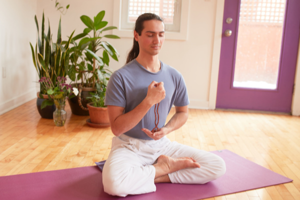
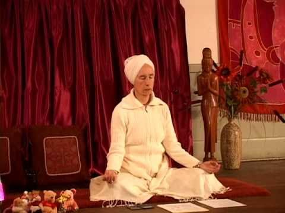
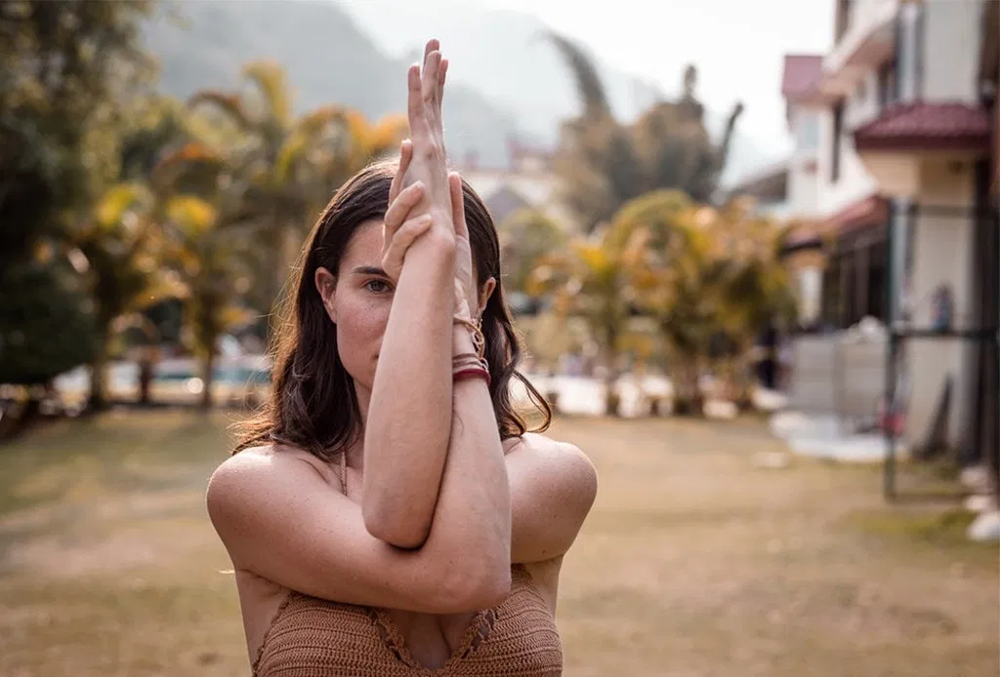

"Tipos de Yoga"
Lo que conocemos como los tipos de yoga, son en realidad las nueve ramas del árbol del yoga.
Todos estos tipos de yoga tienen un mismo objetivo común: la unión del cuerpo y la mente.
Aunque es cierto que dependiendo del tipo de yoga que practiques puedes fortalecer unas zonas
u otras de tu cuerpo, o ganas más flexibilidad o musculatura.
Sea cuál sea el tipo de yoga que decidas hacer, trabajarás la meditación y la unión entre
la conciencia individual y la conciencia universal.
- Bhakti Yoga
- Hatha Yoga
- Japa Yoga | Yoga con mantras 
- Jnana Yoga
- Karma Yoga
- Tantra Yoga
- Laya Yoga | Yoga Kundalini 
- Raja Yoga
- Kriya Yoga 
Es un camino de adoración y devoción a Dios y/o un Gurú.
Suele practicarse en sesiones de cánticos y cultiva la relación con lo divino.
El Bhatki Yoga es ideal para las personas de naturaleza emocional y sensible.
Este tipo de yoga está filosóficamente ligado al Tantra Yoga.
El Hatha Yoga e suno de los más populares en occidente. Este tipo de yoga utiliza el cuerpo
como herramienta para llegar a la exploración de uno mismo.
El Hatha Yoga es conocido porque se practica através de las populares Asanas (posturas de yoga),
y tiene como objetivo purificar cuerpo y mente. Ideal para los que buscan conciliar buen estado físico y salud.
Mantra es una palabra, sílaba o frase que se repite mentalmente, cantada
o pronunciada en voza alta. El uso de los mantras tiene como finalidad centrar la mente y entrar en armonia
con el cuerpo.
El Japa Yoga es ideal para personas sensibles a vibraciones sonoras, que buscan retirarse de una existencia ruidosa.
MEl Jnana Yoga se conoce también como el yoga del verdadero conocimeinto.
Los que practican este tipo de yoga buscan la sabiduria através de ellos mismos, mediante el debate y la razón.
El Jnana Yoga es ideal para personas con mente racional y analítica, que disfrutan de la filosofía.

MEs un camino desinteresado que entiende el yoga como una acción que se
ofrece a Dios, sin esperar recompensas. El Karma Yoga es perfecto para las personas que deseab servir a la humanidad.
Es un error relacionar el Tantra yoga con una forma de sexo espiritualizado, porque
en realidad el sexo es sólo una parte ínfima del yog atántrico. Trabaja en el ritual, la meditación y el misticismo.
El hatha yoga es una de sus ramas.
El Laya Yoga se basa en prácticas que actúan sobre los chakras, o centros energéticos,
y tiene como objetivo dominar la función de cada uno de ellos. Este tipo de yoga también se conoce como Yoga Kundalini.
Este yoga es aconsejable para aquellos que practiquen con un maestro experimentado, ya que puede ser verdaderamente poderoso.
El Raja Yoga es conocido como "la senda del rey" y se centra en el desarrollo de la mente.
Es considerado por algunos el tipo de yoga más clásico. El objetivo del Raja Yoga es mejorar la concentración y alcanzar la unión.
El Kriya Yoga es conocido como el Yoga de la unión con el Infinito por medio de cierta acción.
El Kriya Yoga es una avanzada técnica para la evolución espiritual, el arte científico de la unión con el Propio Ser.